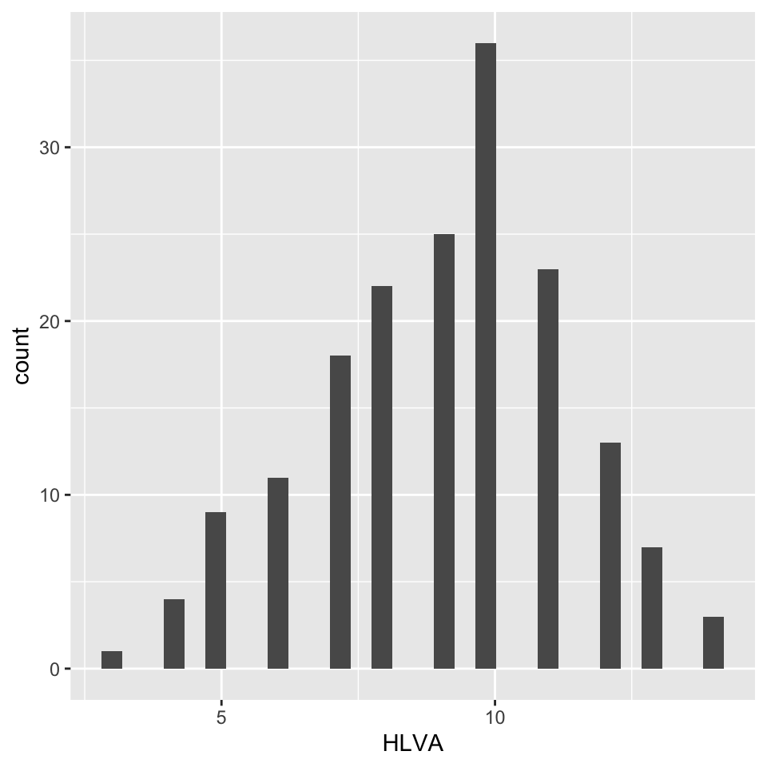
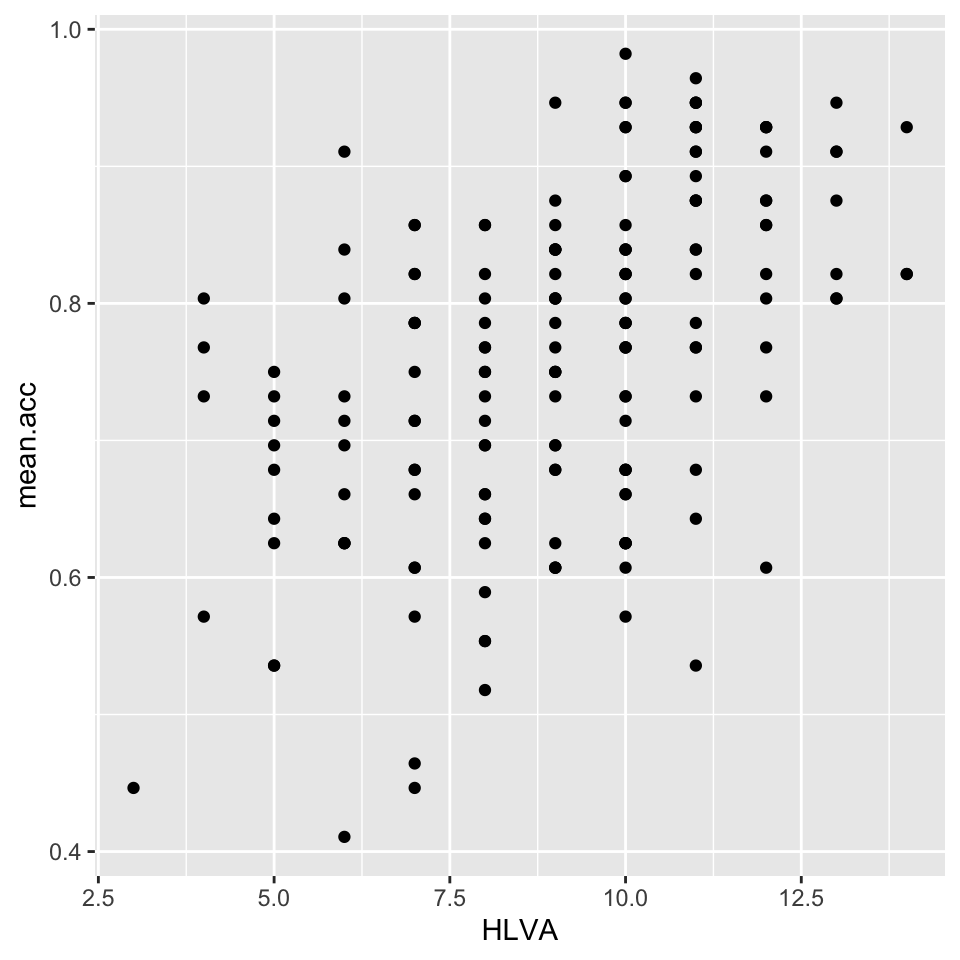

download.file("https://github.com/lu-psy-r/statistics_for_psychologists/blob/main/PSYC122/data/week16/study-one-general-participants.csv?raw=true", destfile = "study-one-general-participants.csv")5. Week 16 – Hypotheses, associations
Written by Rob Davies
Warning
This page is now live for you to use: Welcome!
- Here is a link to the sign-in page for R-Studio Server
Week 16: Introduction
Welcome to your overview of our work together.
We will complete four classes in weeks 16-19.
Tip
Putting it all together
- These classes are designed to help you to revise and to put into practice some of the key ideas and skills you have been developing in the first year research methods modules PSYC121, PSYC123 and PSYC124.
- We will do this in the context of a live research project with potential real world impacts: the Clearly Understood project.
We will present our PSYC122 lessons in the context of a real research project because we think that this context will help you to make sense of the data, and it will help you to see why we ask you to practice the skills we are teaching.
We will be revisiting some of the ideas and techniques you have seen introduced in previous classes. This will give you the opportunity to revise and consolidate your learning. We will extend your development with some new ideas, to help you to strengthen your skills.
We will observe real scientific findings using the data we will collect together. These new findings will ultimately show health providers how to communicate their advice more effectively.
Our learning goals
Tip
In Week 16, we will ask you to do three things.
- First we will ask you to do a pre-lab activity that involves completing a survey.
- Second we will ask you to do a set of practical tasks in the lab activity that are designed to consolidate your learning on data visualization.
- Third we will ask you to think critically about potential associations between measures of individual differences and measures of how well people understand health information.
Completing the survey will help you to understand the numbers you will be working with in the activities: where they come from, and what they show about the people tested. It will also help to teach you about the challenges of measurement: this is one of the key challenges in psychological science.
We will build practice in using correlations to test predictions about associations and thus to answer research questions.
Lectures
Tip
Before you go on to the activities, watch the lectures:
The lecture for this week is presented in four short parts. You can view video recordings of the lectures using Panopto, by clicking on the links shown following.
- Overview (15 minutes): What we are doing in weeks 16-20, and how and why you will develop your critical thinking skills.
- Thinking critically (11 minutes): A summary of the health communication project, and the ideas we assume to develop our hypotheses.
- Thinking about associations in research (22 minutes): How we visualize and think about distributions and associations.
- Interpreting, reporting and visualizing correlations (11 minutes): How we use R to estimate and test correlations.
Tip
The slides presented in the videos can be downloaded either as a web page or as a Word document.
- The slides exactly as presented (36 MB).
- The slides converted to a Word .docx (24 MB).
You can download the web page .html file and click on it to open it in any browser (e.g., Chrome, Edge or Safari). The slide images are high quality so the file is quite big and may take a few seconds to download.
You can download the .docx file and click on it to open it as a Word document that you can then edit. Converting the slides to a .docx distorts some images but the benefit of the conversion is that it makes it easier for you to add your notes.
Reading: Links to other classes
We do not provide further reading for this class but you will find it helpful to revise some of the key ideas you have been learning about PSYC122 and in other modules.
- The lectures in PSYC123 on: the scientific method; reliability and validity; experimental design, especially between-subjects studies; hypothesis testing; and precise hypotheses.
- The lecture in PSYC122 on correlations.
Pre-lab activities
Pre-lab activity 1
In weeks 16-19, we will be working together on a research project to investigate how people vary in their response to health advice.
Completing the project involves collecting responses from PSYC122 students: you.
To enter your responses, we invite you to complete a short survey.
Complete the survey by clicking on the link here
Tip
In our week 19 class activity, we will analyze the data we collect here.
The survey should take about 20 minutes to complete.
Taking part in the survey is completely voluntary. You can stop at any time without completing the survey if you do not want to finish it. If you do not want to do the survey, you can do an alternative activity (see below).
All responses will be recorded completely anonymously.
Pre-lab activity alternative option
If you do not want to complete the survey, we invite you to read the pre-registered research plan for the PSYC122 health advice research project.
Lab activities
Introduction
We will do our practical lab work to develop your skills in the context of the Clearly Understood project.
- Our focus will be on what makes it easy or difficult for people to understand written health information.
Why are we doing this?
We encounter written health information all the time: in warnings signs, on medication labels, in clinics when we go to see the doctor, and online when we research things we are worried about. It is not always easy to understand this information. The problem is that it is unclear how health information should be communicated: even this is important, there is not much evidence.
As psychologists, we can help.
Important
In these classes, we will complete a research project to answer the research questions:
- What person attributes predict success in understanding health information?
- Can people accurately evaluate whether they correctly understand written health information?
Get ready
Download the data
Click on the link: 122_week16_for_students.zip to download the data files folder. Then upload the contents to the new folder you created in RStudio Server.
The downloadable .zip folder includes the data files:
study-one-general-participants.csvstudy-two-general-participants.csv
and the R Markdown .Rmd:
2023-24-PSYC122-w16-how-to.Rmd
If you can’t upload these files to the server – this affects some students – you can use some code to get R to do it for you: uncover the code box below to reveal the code to do this.
Code
- You can use the code below to directly download the file you need in this lab activity to the server.
- Remember that you can copy the code to your clipboard by clicking on the ‘clipboard’ in the top right corner.
- Get the
study-one-general-participants.csvdata
- Get the
study-two-general-participants.csvdata
download.file("https://github.com/lu-psy-r/statistics_for_psychologists/blob/main/PSYC122/data/week16/study-two-general-participants.csv?raw=true", destfile = "study-two-general-participants.csv")- Get the
2023-24-PSYC122-w16-how-to.Rmdhow-to guide
download.file("https://github.com/lu-psy-r/statistics_for_psychologists/blob/main/PSYC122/data/week16/2023-24-PSYC122-w16-how-to.Rmd?raw=true", destfile = "2023-24-PSYC122-w16-how-to.Rmd")Check: What is in the data files?
Each of the data files we will work with has a similar structure, as you can see in this extract.
| participant_ID | mean.acc | mean.self | study | AGE | SHIPLEY | HLVA | FACTOR3 | QRITOTAL | GENDER | EDUCATION | ETHNICITY |
|---|---|---|---|---|---|---|---|---|---|---|---|
| studytwo.1 | 0.4107143 | 6.071429 | studytwo | 26 | 27 | 6 | 50 | 9 | Female | Higher | Asian |
| studytwo.10 | 0.6071429 | 8.500000 | studytwo | 38 | 24 | 9 | 58 | 15 | Female | Secondary | White |
| studytwo.100 | 0.8750000 | 8.928571 | studytwo | 66 | 40 | 13 | 60 | 20 | Female | Higher | White |
| studytwo.101 | 0.9642857 | 8.500000 | studytwo | 21 | 31 | 11 | 59 | 14 | Female | Higher | White |
You can use the scroll bar at the bottom of the data window to view different columns.
You can see the columns:
participant_IDparticipant codemean.accaverage accuracy of response to questions testing understanding of health guidancemean.selfaverage self-rated accuracy of understanding of health guidancestudyvariable coding for what study the data were collected inAGEage in yearsHLVAhealth literacy test scoreSHIPLEYvocabulary knowledge test scoreFACTOR3reading strategy survey scoreGENDERgender codeEDUCATIONeducation level codeETHNICITYethnicity (Office National Statistics categories) code
Tip
It is always a good idea to view the dataset – click on the name of the dataset in the R-Studio Environment window, and check out the columns, scroll through the rows – to get a sense of what you are working with.
Lab activity 1: Work with the How-to guide
The how-to guide comprises an .Rmd file:
2023-24-PSYC122-w16-how-to.Rmd
It is full of advice and example code.
The code in the how-to guide was written to work with the data file:
study-one-general-participants.csv.
Tip
We show you how to do everything you need to do in the lab activity (Section 5.4, next) in the how-to guide.
- Start by looking at the
how-toguide to understand what steps you need to follow in the lab activity.
We will take things step-by-step.
We split .Rmd scripts by steps, tasks and questions:
- different steps for different phases of the analysis workflow;
- different tasks for different things you need to do;
- different questions to examine different ideas or coding challenges
Tip
- Make sure you start at the top of the
.Rmdfile and work your way, in order, through each task. - Complete each task before you move on to the next task.
In the activity Section 5.4, we are going to work through the following tasks.
Step 1: Set-up
- Empty the R environment – using
rm(list=ls()) - Load relevant libraries – using
library()
Step 2: Load the data
- Read in the data file – using
read_csv() - Inspect the data – using
head()andsummary() - Change the type classification of a variable in the data – using
as.factor()
Step 3: Use histograms to examine the distributions of variables
- Draw histograms to examine the distributions of variables – using
ggplot()andgeom_histogram()
Step 4: Edit your plots to make them look good
- Edit the appearance of one histogram plot step-by-step
Step 5: Now draw scatterplots to examine associations between variables
- Draw scatterplots to examine the associations between some variables – using
ggplot()andgeom_point() - Draw scatterplots to examine different variables
Step 6: Edit the scatterplots to make them look good
- Edit the appearance of a plot step-by-step
Step 7: Use correlation to to answer the research questions
- Examine associations between variables using correlation.
Tip
If you are unsure about what you need to do, look at the advice in 2023-24-PSYC122-w16-how-to.Rmd on how to do the tasks, with examples on how to write the code.
You will see that you can match a task in the activity Section 5.4 to the same task in the how-to guide. The how-to shows you what function you need and how you should write the function code.
This process of adapting demonstration code is a process critical to data literacy and to effective problem solving in modern psychological science.
Warning
Don’t forget: You will need to change the names of the dataset or the variables to complete the tasks in the activity.
Lab activity 2
OK: now let’s do it!
In the following, we will guide you through the tasks and questions step by step. You will learn more if you follow this advice:
Tip
- We will hide the code to do some tasks behind a drop-down button. Try to write and run the code for yourself first.
- We won’t always give you the code required to do something: this gives you the chance to check what you have learned by trying out your code without the answer in front of you.
- We will not at first give you the answers to questions about the data or about the results of analyses.
- An answers version of the workbook will be provided after the last lab session (check the answers then in Section 6) so that you can check whether your independent work has been correct.
Questions
Step 1: Set-up
To begin, we set up our environment in R.
Task 1 – Run code to empty the R environment
rm(list=ls()) Task 2 – Run code to load relevant libraries
library("tidyverse")Step 2: Load the data
Task 3 – Read in the data file we will be using
The data file for the workbook is called:
study-two-general-participants.csv
Use the read_csv() function to read the data file into R.
Code
study.two.gen <- read_csv("study-two-general-participants.csv")When you code this, you can choose your own file name, but be sure to give the data object you create a distinct name e.g. study.two.gen.
Task 4 – Inspect the data file
Use the summary() or head() functions to take a look
Code
summary(study.two.gen)Q.1. What is the median of
AGE?
Q.2. What class is the variable
ETHNICITY?
Q.3. Does the summary indicate if any variable has missing values (NAs)?
Task 5 – Change the class or type of the variable ETHNICITY to factor
You can use the as.factor() function you have used before: how do you write the code for these data? Try it for yourself before revealing the code.
Code
study.two.gen$ETHNICITY <- as.factor(study.two.gen$ETHNICITY)Q.4. After you have done this, what information does
summary()give you about the variableETHNICITY?
Code
summary(study.two.gen)Step 3: Use histograms to examine the distributions of variables
Task 6 – Draw histograms to examine the distributions of variables
Hint: Task 6
Hint
Use ggplot() with geom_histogram().
The first time we do this, we can take things one step at a time.
Here’s an example: run the line of code and see the result in the Plots window in R-Studio.
ggplot(data = study.two.gen, aes(x = mean.acc)) + geom_histogram()These are the steps, set out one step at a time:
ggplot(...)you tell R you want to make a plot using theggplot()functionggplot(data = study.two.gen ...)you tell R you want to make a plot with thestudy.two.gendataggplot(..., aes(x = mean.acc))you tell R that you want to make a plot with the variablemean.acc– here, you specify the aesthetic mapping,x = mean.accggplot(...) + geom_histogram()you tell R you want to plot values ofmean.accas a histogram
Questions: Task 6
Q.5. Did you get a message in the
Consolewindow inR-Studio: what does it say?
Q.6. Draw two different histograms to examine the distributions of two different variables:
SHIPLEYandHLVA
Try it for yourself before revealing the code: can you do it?
Click on the button to see the code for drawing the histogram of SHIPLEY scores.
Code
ggplot(data = study.two.gen, aes(x = SHIPLEY)) + geom_histogram()Figure 1 shows you what you are aiming to produce for the second plot: a histogram of HLVA scores? What code do you need to write?

Q.7. Now edit the code for both plots: can you change the binwidth in
geom_histogram()to make the bars wider?
If you are going to change binwidth the number you use needs to be a number larger than the minimum and smaller than the maximum for the variable.
Remember, min and max values are given for each numeric variable in summary().
Code
ggplot(data = study.two.gen, aes(x = SHIPLEY)) + geom_histogram(binwidth = 2)
ggplot(data = study.two.gen, aes(x = HLVA)) + geom_histogram(binwidth = 2)We adjust binwidth typically to improve the appearance of the plot.
This is a bit subjective so try different numbers and see how you feel about the changes in appearance.
We want histograms that show us enough detail about the frequency of occurrence of groupings (bins) of values for each variable.
But we do not want histograms that show us so much detail it is difficult to see the pattern for the distribution.
Q.8. – How would you describe the distributions – in a sentence – of the distributions of the
SHIPLEYandHLVAvariable values for our sample?
Step 4: Edit your plots to make them look good
Task 7 – Edit the appearance of a histogram plot for one numeric variable
Note that ggplot() code does not all have to be on the same line.
You can create a new plot for each edit so you can see what difference your edits make.
Q.9. Edit the appearance of the bars using
binwidth
Code
ggplot(data = study.two.gen, aes(x = HLVA)) +
geom_histogram(binwidth = 2)Q.10. Edit the colour of the background using
theme_bw()
Code
ggplot(data = study.two.gen, aes(x = HLVA)) +
geom_histogram(binwidth = 2) +
theme_bw()Q.11. Edit the appearance of the labels using
labs()
Code
ggplot(data = study.two.gen, aes(x = HLVA)) +
geom_histogram(binwidth = 2) +
theme_bw() +
labs(x = "HLVA", y = "count")Notice how, if you are doing edits in steps, one line at a time, each line in your code except the last one ends in a +.
What we are doing is telling R we want this + and this + and this … Each line then adds an extra step.
You can break this code by not adding a + at the end of each bit (except the last line).
Notice that how to break the code, and how to figure out how to fix the break, are discussed in the how-to guide.
Step 5: Now draw scatterplots to examine associations between variables
Task 8 – Create a scatterplot to examine the association between some variables
We are working with geom_point() and you need x and y aesthetic mappings
ggplot(data = study.two.gen, aes(x = HLVA, y = mean.acc)) +
geom_point()
This plot shows the possible association between x-axis variable HLVA and y-axis variable mean.acc.
The plot code moves through the following steps:
ggplot(...)make a plotggplot(data = study.two.gen, ...)with thestudy.two.gendatasetggplot(...aes(x = HLVA, y = mean.acc))using two aesthetic mappings:
x = HLVAmapHLVAvalues to x-axis (horizontal, left to right) positionsy = mean.accmapmean.accvalues to y-axis (vertical, bottom to top) positions
geom_point()show the mappings as points
Task 9 – Now do scatterplots with every numeric predictor variable in the study.two.gen dataset
You always want to use the outcome mean.acc as the y-axis variable so:
y = mean.acc
Then you can use each numeric predictor variable as the x-axis variable so:
x = mean.self
Tip
Remember what we saw with summary(): not every variable consists of numbers
If the summary() does not show you a mean for a variable, then R does not think that variable is numeric
It can be hard to decide what an association looks like so make a decision based on what you see
Right now, we are working to build your intuitions so: reflect, trust your intuition, and make a decision.
Draw the plot, answer the question
Q.12. What is the shape (direction) of the association between
mean.selfandmean.acc?
Code
ggplot(data = study.two.gen, aes(x = mean.self, y = mean.acc)) +
geom_point()Draw the plot, answer the question
Q.13. What is the shape (direction) of the association between
AGEandmean.acc?
Code
ggplot(data = study.two.gen, aes(x = AGE, y = mean.acc)) +
geom_point()Draw the plot, answer the question
Q.14. What is the shape (direction) of the association between
SHIPLEYandmean.acc?
Code
ggplot(data = study.two.gen, aes(x = SHIPLEY, y = mean.acc)) +
geom_point()Draw the plot, answer the question
Q.15. What is the shape (direction) of the association between
HLVAandmean.acc?
Code
ggplot(data = study.two.gen, aes(x = HLVA, y = mean.acc)) +
geom_point()Draw the plot, answer the question
Q.16. What is the shape (direction) of the association between
FACTOR3andmean.acc?
Code
ggplot(data = study.two.gen, aes(x = FACTOR3, y = mean.acc)) +
geom_point()Draw the plot, answer the question
Q.17. What is the shape (direction) of the association between
QRITOTALandmean.acc?
Code
ggplot(data = study.two.gen, aes(x = QRITOTAL, y = mean.acc)) +
geom_point()Step 6: Edit the scatterplots to make them look good
Task 10 – Edit the appearance of one plot step-by-step
Learn how to edit your plotting code so that you can make plots with a professional appearance.
Tip
- We teach this because we know that some of our alumni get jobs after they develop pro visualization skills with us.
- We will do this learning as part of PSYC122.
In doing this work, you will learn about:
- coding – how to do the edits;
- visualization – how to look at and read plots;
- presentation – what works and what doesn’t for your audience.
We get started here.
Hint: Task 10 – We are going to edit a scatterplot to adjust
- the appearance of the points using
alpha,sizeandcolour; - the colour of the background using
theme_bw(); - the appearance of the labels using
labs().
In the following, we ask you to edit one plot element at a time. You can work out what to do.
There is helpful ggplot reference information that you can use: here.
You can visit the find the ggplot reference webpages, find some example code, and come back here.
You can click on the reveal button, for each question, to get our example code.
Tip
- You do not have to stick with our choices on colour, size etc.
- Experiment change the options and see what happens.
Questions: Task 10
Q.18. Change the appearance of the points using alpha, size and colour:
Code
ggplot(data = study.two.gen, aes(x = HLVA, y = mean.acc)) +
geom_point(alpha = 0.5, size = 2, colour = "red")Q.19. Edit the colour of the background using
theme_bw()
Code
ggplot(data = study.two.gen, aes(x = HLVA, y = mean.acc)) +
geom_point(alpha = 0.5, size = 2, colour = "red") +
theme_bw()Q.20. Edit the appearance of the labels using
labs()
Code
ggplot(data = study.two.gen, aes(x = HLVA, y = mean.acc)) +
geom_point(alpha = 0.5, size = 2, colour = "red") +
theme_bw() +
labs(x = "HLVA", y = "mean accuracy")Q.21. Can you find the ggplot reference page?
Try doing a search with the keywords: ggplot reference geom_point
Now it’s your turn: experiment!
- What about different colour words? Replace
"red"with"..."? - What about a different size? Replace
size = 2withsize = ...using a different number. - What about a different level of transparency (alpha)? Replace
alpha = 0.5withalpha = ...using a different fraction.
Step 7: Use correlation to to answer the research questions
Task 11 – Examine the correlation between mean accuracy (mean.acc) and some numeric predictor variables
We use cor.test() for the questions that follow.
Tip
- We take a slightly different approach to the approach you have seen in previous weeks see here
- You have seen the code before.
- Here, we use
cor.test()on its own because we want to focus your attention on the statistics
Q.22. What is r (given as
corin the output) for the correlation betweenHLVAandmean.acc?
Can you figure out the code to do the calculation?
Code
cor.test(study.two.gen$HLVA, study.two.gen$mean.acc, method = "pearson", alternative = "two.sided")Q.23. Is the correlation significant?
Q.24. What are the values for t and p for the significance test for the correlation?
Q.25. What do you conclude, given the correlation results?
Maybe draw a scatterplot to examine the shape of the association.
Q.26. What is r (given as
corin the output) for the correlation betweenmean.selfandmean.acc?
Can you figure out the code to do the calculation?
Code
cor.test(study.two.gen$mean.self, study.two.gen$mean.acc, method = "pearson", alternative = "two.sided")Q.27. Is the correlation between
AGEandmean.accsignificant?
Can you figure out the code to do the calculation?
Code
cor.test(study.two.gen$AGE, study.two.gen$mean.acc, method = "pearson", alternative = "two.sided")Q.28. What are the values for t and p for the significance test for the correlation between
QRITOTALandmean.acc?
Can you figure out the code to do the calculation?
Code
cor.test(study.two.gen$QRITOTAL, study.two.gen$mean.acc, method = "pearson", alternative = "two.sided")Q.29. What do you conclude, given the correlation results, about the association between
SHIPLEYandmean.acc?
Code
cor.test(study.two.gen$SHIPLEY, study.two.gen$mean.acc, method = "pearson", alternative = "two.sided")Answers
When you have completed all of the lab content, you may want to check your answers with our completed version of the script for this week.
Tip
The .Rmd script containing all code and all answers for each task and each question will be made available after the final lab session has taken place.
- You can download the script 2023-24-PSYC122-w16-workbook-answers.Rmd when it is available.
We set out the Week 16 Hypotheses, associations questions below. We focus on the Lab activity 2 questions where we ask you to interpret something or say something.
You can see all the code and all the answers in 2023-24-PSYC122-w16-workbook-answers.Rmd.
Answers
Tip
Click on a box to reveal the answer.
Questions
Q.1. What is the median of
AGE?
Q.2. What class is the variable
ETHNICITY?
Q.3. Does the summary indicate if any variable has missing values (NAs)?
Q.4. After you have done this [change ETHNICITY to a factor], what information does
summary()give you about the variableETHNICITY?
Q.5. Did you get a message in the
Consolewindow inR-Studio[when you produced a histogram]: what does it say?
Q.6. Draw two different histograms to examine the distributions of two different variables:
SHIPLEYandHLVA
Q.7. Now edit the code for both plots: can you change the binwidth in
geom_histogram()to make the bars wider?
Q.8. – How would you describe the distributions – in a sentence – of the distributions of the
SHIPLEYandHLVAvariable values for our sample?
Q.12. What is the shape (direction) of the association between
mean.selfandmean.acc?
Q.13. What is the shape (direction) of the association between
AGEandmean.acc?
Q.14. What is the shape (direction) of the association between
SHIPLEYandmean.acc?
Q.15. What is the shape (direction) of the association between
HLVAandmean.acc?
Q.16. What is the shape (direction) of the association between
FACTOR3andmean.acc?
Q.17. What is the shape (direction) of the association between
QRITOTALandmean.acc?
Q.21. Can you find the ggplot reference page?
Try doing a search with the keywords: ggplot reference geom_point
Q.22. What is r (given as
corin the output) for the correlation betweenHLVAandmean.acc?
Q.23. Is the correlation significant?
Q.24. What are the values for t and p for the significance test for the correlation?
Q.25. What do you conclude, given the correlation results?
Q.26. What is r (given as
corin the output) for the correlation betweenmean.selfandmean.acc?
Q.27. Is the correlation between
AGEandmean.accsignificant?
Q.28. What are the values for t and p for the significance test for the correlation between
QRITOTALandmean.acc?
Q.29. What do you conclude, given the correlation results, about the association between
SHIPLEYandmean.acc?
Online Q&A
You will find, below, a link to the video recording of the week 16 online Q&A after it has been completed.